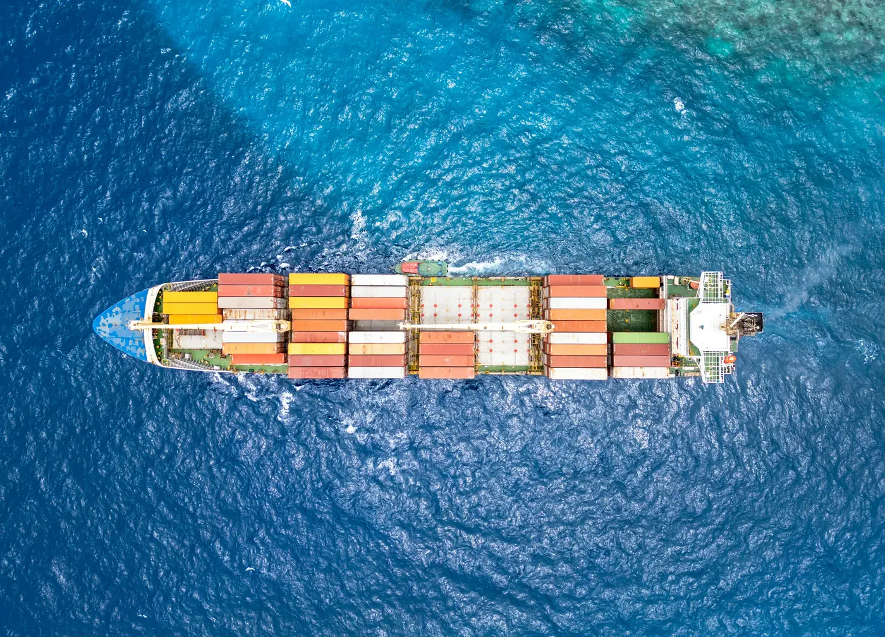

Dia Dış Ticaret
2021 yılında İstanbul’da kurulmuş olup uluslararası dış ticaret alanında faaliyet göstermektedir. Dia Global markası altında, müşterilerimize güvenilir ve sürdürülebilir ticaret çözümleri sunmaktayız.
Farklı pazarlarda edindiğimiz deneyim sayesinde, ihracat ve ithalat süreçlerini etkin bir şekilde yöneterek iş ortaklarımıza değer katıyoruz. Operasyonel gücümüz ve çözüm odaklı yaklaşımımız ile global ticaretin dinamiklerine uyum sağlayarak hizmet vermeye devam ediyoruz.
Müşteri odaklı çalışma anlayışımızla, kaliteyi sürekli geliştirmeyi, iş ahlakı ve dürüstlüğü temel ilke olarak benimsemeyi önceliğimiz olarak görüyoruz. İnsan kaynağına verdiğimiz değer ve sürdürülebilir büyüme yaklaşımımız ile uluslararası alanda güçlü bir iş ortağı olmayı hedefliyoruz.
